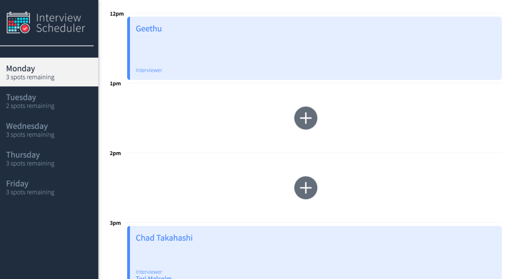
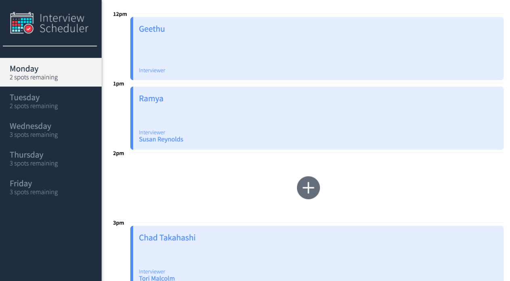
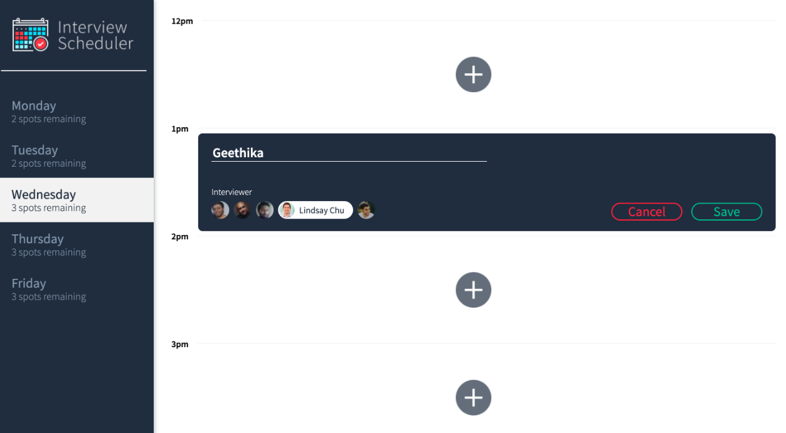
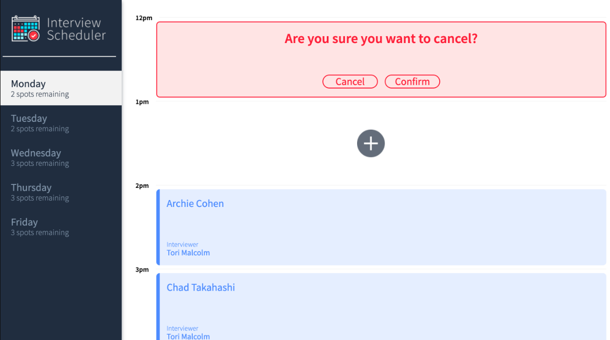

Interview Scheduler

Interview Scheduler is a single page application built using React. Interviews can be booked between Monday and Friday. A user can switch between weekdays. A user can book an interview in an empty appointment slot. Interviews are booked by typing in a student name and clicking on an interviewer from a list of available interviewers. A user can cancel an existing interview. A user can edit the details of an existing interview. The list of days informs the user how many slots are available for each day. The expected day updates the number of spots available when an interview is booked or canceled.
A user is presented with a confirmation when they attempt to cancel an interview. A user is shown an error if an interview cannot be saved or deleted. A user is shown a status indicator while asynchronous operations are in progress. When the user presses the close button of the error they are returned to the Form or Show view. This application makes API requests to load and persist data. We do not lose data after a browser refresh.
To build this application I have used React Webpack, Babel Axios, WebSockets Axios Storybook, Webpack Dev Server, Jest, Testing Library.
   